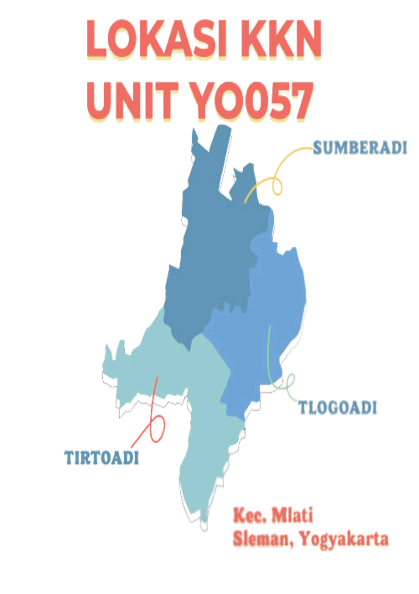

Profil Kalurahan
Sumberadi | Tirtoadi | Tlogoadi
Kenali pesona keunikannya!

Profil Kalurahan

Destinasi Wisata
Pilihan destinasi wisata terpopuler

Kenali pesona keunikannya!
Pilihan destinasi wisata terpopuler